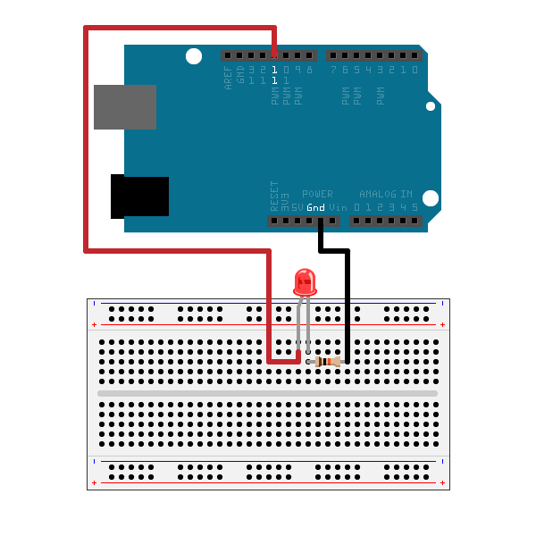
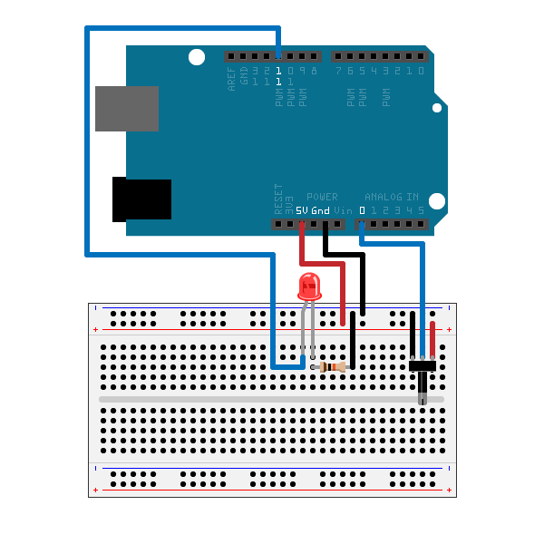
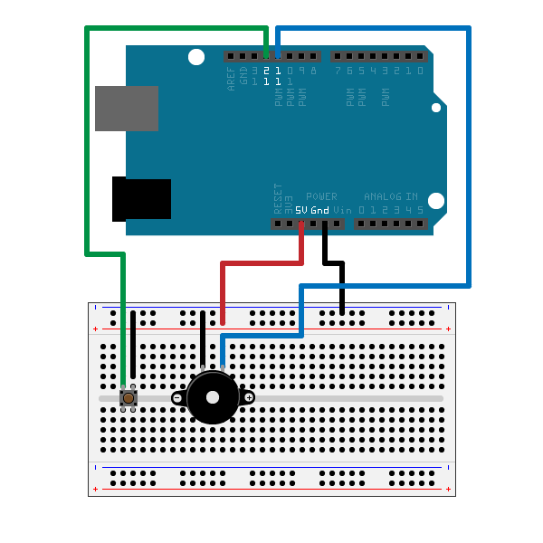

Getting Started with MATLAB Support Package for Arduino Hardware
This example shows how to use MATLAB® Support Package for Arduino® Hardware to perform basic operations on the hardware such as turning an LED on and off, blinking LEDs and playing sound on a speaker.
Contents
Hardware setup
- Connect an LED to digital pin 11 on the Arduino hardware through a 1KOhm resistor.

Create an arduino object
a = arduino();
If you have more than one Arduino board connected, specify the port and board type.
a = arduino('com23', 'uno');
Turn LED on and off
Write value 1 or true to digital pin 13 turns on the built-in LED and write a value of 0 or false turns it off. Execute the following command at the MATLAB prompt to turn the LED off and on.
writeDigitalPin(a, 13, 0); pause(2); writeDigitalPin(a, 13, 1);
Configure the LED to blink at a period of 1 second.
for i = 1:10 writeDigitalPin(a, 13, 0); pause(0.5); writeDigitalPin(a, 13, 1); pause(0.5); end
Brighten and dim LED
Send pulse signals of specified width to the PWM pins on the Arduino hardware. PWM signals can light up LEDs connected to the pin. The duty cycle of the pulse controlls the brightness of the LED. Calculate the amount that the LED brightens and dims by dividing the max and min duty cycle for the pin by the number of iterations.
brightness_step = (1-0)/20; for i = 1:20 writePWMDutyCycle(a, 11, i*brightness_step); pause(0.1); end for i = 1:20 writePWMDutyCycle(a, 11, 1-i*brightness_step); pause(0.1); end
You can also brighten and dim the lights by changing the voltage of the PWM signal. Calculate the amount that the LED brightens and dims by dividing the max and min voltage for the pin by the number of iterations.
brightness_step = (5-0)/20; for i = 1:20 writePWMVoltage(a, 11, i*brightness_step); pause(0.1); end for i = 1:20 writePWMVoltage(a, 11, 5-i*brightness_step); pause(0.1); end
Control an LED using a potentiometer
The potentiometer changes the voltage value read from analog pin 0 which can be used to set the voltage level on the PWM pin to control the brightness of the LED connected. Connect a potentiometer to Arduino hardware with the middle leg connected to analog pin 0 and the other two connected to 5V and GND.

time = 200; while time > 0 voltage = readVoltage(a, 0); writePWMVoltage(a, 11, voltage); time = time - 1; pause(0.1); end
While the code is running, you can rotate the knob on the potentiometer to see how it affects the brightness of the LED.
Control a Piezo speaker using a push button
This part of the example shows how to play a tone controlled by a push button connected to a digital pin on the Arduino hardware. You can also configure a digital pin to pullup mode and use the built-in pullup resistor.
1) Connect a Piezo speaker to digital pin 11.
2) Connect a push button to digital pin 12.

To play a tone on the speaker, you can use playTone method to specify the frequency and duration of the sound. Second, the status of a push button can be detected by reading the connected digital pin's value. In order for the push button to work, a pullup resistor needs to be connected to the corresponding digital pin on Arduino board. You can use the built-in pullup resistor by configuring the digital pin mode to pullup to enable it. If the button has been pushed, meaning the read back value is 0, a beep sound is played on the speaker. Execute the following command at the MATLAB prompt to play a sound on the speaker when push button is pressed down.
configureDigitalPin(a, 12, 'pullup'); time = 200; while time > 0 speaker_status = readDigitalPin(a, 12); if speaker_status == 0 playTone(a, 11, 1200, 1); else % Change duration to zero to mute the speaker playTone(a, 11, 1200, 0); end time = time - 1; pause(0.1); end
Clean up
Once the connection is no longer needed, clear the arduino object.
clear a